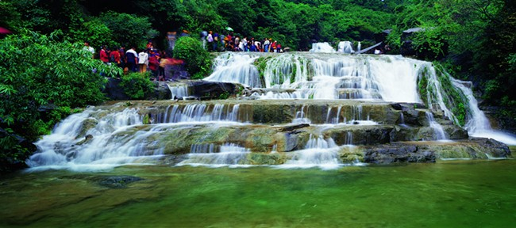
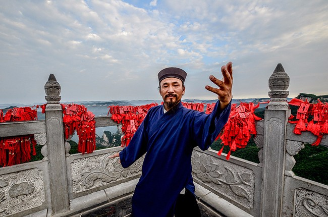
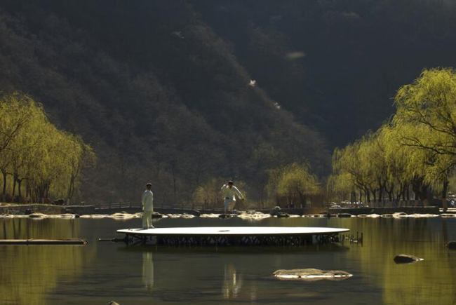
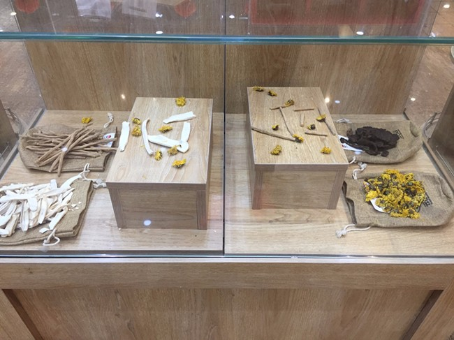

||景区概况
云台山位于中国河南省西北部，总面积280平方公里，是一处以太行山岳丰富的水景为特色，以峡谷类地质地貌景观和悠久的历史文化为内涵，集科学价值和美学价值于一身的科普生态旅游精品景区。2004年云台山被评为全球首批世界地质公园，2007年8月27日，云台山与美国大峡谷国家公园在人民大会堂签订合作协议，缔结为姐妹公园。目前，云台山是河南唯一一家集全球首批世界地质公园和国家级风景名胜区、首批国家5A级旅游景区、国家自然遗产、国家生态旅游示范区、国家森林公园、国家级猕猴自然保护区、国家水利风景区、国家文化产业示范基地八个国家级称号于一身的景区。
云台山景区包含有红石峡、潭瀑峡、泉瀑峡、青龙峡、峰林峡、万善寺、子房湖、猕猴谷、茱萸峰、百家岩、叠彩洞等十一大景点。云台山坐拥秀美山水，涵养深厚文化，扎根太极圣地，盛产怀药药材，是一处山水养眼、文化养心、太极养气、医药养生、民俗养性的中国养生地。
山水养眼
云台山以山称奇，因峰冠雄。茱萸峰是历代文人墨客，僧道修行的圣地，这里植被茂密，古树参天，森林植被覆盖率高达93%，植物种类达1400多种。踏千阶的云梯栈道，登上海拔1297.6米的茱萸峰顶，北望太行深处，巍巍群山，南望怀川平原，沃野千里，使人顿生“会当凌绝顶，一览众山小”的豪迈气慨。唐代大诗人王维曾登临此峰写下“独在异乡为异客，每逢佳节倍思亲。遥知兄弟登高处，遍插茱萸少一人”的千古绝句。
云台山以水叫绝，因峡显幽。峡谷奇观红石峡，集秀、幽、雄、险于一身，融泉、瀑、溪、潭于一谷，外旷内幽，奇景深藏，素来享有“盆景峡谷”的美誉。太行秀水潭瀑峡，密布瀑、泉、溪、潭，流水跌宕声声，潭瀑相映成趣。泉瀑峡山雄水秀，峰高瀑急，落差314米的亚洲第一高瀑“云台天瀑”就位于泉瀑峡尽头，上吻蓝天，下蹈石坪，宛若银河飞落，犹如擎天玉柱，蔚为壮观。
联合国教科文组织地学部主任伊德博士实地考察景区后感叹到：“我不得不承认，云台山是一个独一无二、不可比拟的地质公园。它给我的印象是一部乐章，是一首贝多芬的交响乐，是一首最美妙的山水交响乐。”

文化养心
云台山不仅拥有秀美的山水自然景观，历史文化内涵也很丰富。从东汉起，云台山备受帝王将相、达官贵人垂青，并为魏晋名士所经营，道家所开发，南北朝以后逐渐由儒释道三教在此合流共处，世世代代为众多文人墨客、四方名流聚散地。地处茱萸峰极顶的玄帝宫，自古就流传着真武大帝在此修行成仙的民间故事，与南顶武当遥相呼应，被人称为“北顶”。始建于明代的万善寺位于茱萸峰翠屏峰脚下，是佛家教派临济宗祖庭。云台山百家岩是历史文化最为深厚的精品景点，汉献帝刘协曾在此避暑游乐，纵情山水。魏晋时期，史称“竹林七贤”的嵇康、刘伶、向秀、山涛等七位文人雅士曾隐居百家岩竹林长达二十余年，并先后结识孙登、王烈等隐士，留下了“孙登啸台”、“王烈泉”、“刘伶醒酒台”、“嵇康淬剑池”等遗迹，百家岩也成了中国山水园林文化从宫廷走向民间的发祥地。唐宋八大家之首韩愈在百家岩写诗《题两百涧》，发出“又疑武陵溪上源”的赞叹。

太极养气
太极拳是我国著名的内家功夫名拳，发源于焦作温县陈家沟，三百多年来，经过世代相传，逐渐演化出杨式、吴式、孙式、武式等诸多流派，目前在全世界参练总人数达3亿多人，成为最受欢迎的世界第一运动。
陈式太极拳是东方文化的瑰宝，它的特点是以刚为主，刚中有柔，动作窜蹦跳跃、闪展腾挪，具有锻炼肌肉、舒经活络、调整呼吸、平心静气的作用，长期练习可强身健体、延年益寿，达到身心健康和谐发展。为向游客展示正宗的陈氏太极拳，云台山景区邀请曾多次卫冕国际太极拳的陈式太极拳嫡传弟子，每天在小寨沟景区内定时表演，柔中带刚、行云流水的太极拳表演吸引了众多游客的观看和赞赏。

医药养生
云台山草木丰茂、植被多样，生长着地黄、菊花、牛膝、山药、连翘等多种珍贵中草药，唐代大医药学家“药王”孙思邈曾在云台山一带活动，并留下“药王洞”遗址。以“怀山药、怀地黄、怀菊花、怀牛膝”为代表的四大怀药，是博大精深的中医药文化瑰宝，素以药材地道、疗效独特而号称“怀参”，早在春秋时代怀药就是向王侯进献的贡品。怀药不仅畅销国内，而且远销30多个国家和地区，早在明朝怀药就已出口东南亚，在国际市场上广受赞誉，日、美称其为“华药”。
云台山地区特有的土壤与气候条件,造就了怀药独特的药性和极高的保健价值，并逐渐形成了独特的怀药药膳养生文化，包括蜂蜜山药、蜜汁鸡头参、牛膝炖土鸡、巧拌地黄丝、十足全虫、连翘茶等融合当地特色的云台山美食。
